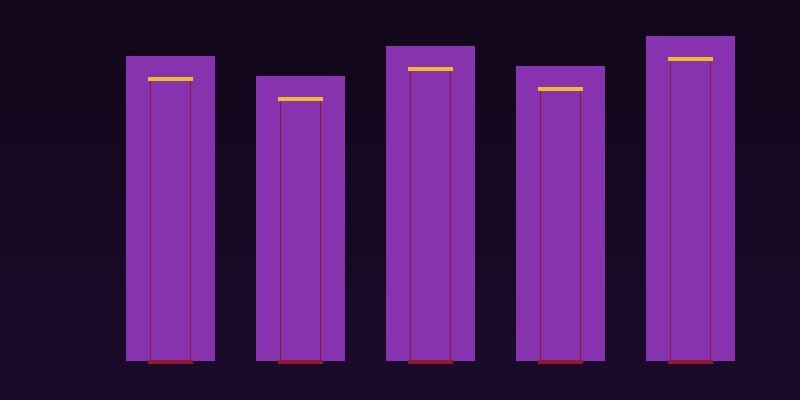

Art, Wine, and Collectibles: Building a Tangible Asset Portfolio
For centuries, the world's wealthiest families have understood something that modern portfolio theory has only recently begun to formalize: tangible assets fine art, rare wine, classic cars, antique furniture, and collectibles of all kinds are not merely objects of beauty, but legitimate stores of value with return characteristics that can meaningfully enhance a diversified portfolio. The numbers are striking. The Mei Moses World All Art Index, which tracks repeat sales of artworks at auction, has delivered an annualized compound return of approximately 8.9 percent over the past 50 years, comparable to equity market returns but with low correlation to traditional financial assets. During the inflationary period of the 1970s, art significantly outperformed both stocks and bonds, providing a real hedge when it was most needed.
The Art Market: Structure, Indices, and Access
The art market is often described as the last great unregulated financial market, and for good reason. Unlike publicly traded securities, art transactions occur in an opaque ecosystem of galleries, auction houses, private dealers, and art fairs, with pricing often determined as much by reputation and narrative as by objective valuation metrics. The market is deeply bifurcated between the ultra-high-end segment dominated by a handful of blue-chip artists whose works routinely sell for tens of millions of dollars and the broader market of emerging and mid-career artists where genuine bargains can still be found by knowledgeable collectors. For investors seeking exposure without the complexities of direct ownership, art funds and fractional ownership platforms have emerged as accessible alternatives, though they introduce their own layers of fees, manager risk, and liquidity constraints that warrant careful due diligence.
Wine as an Alternative Asset Class
Fine wine has emerged as one of the most systematically investable tangible assets, thanks to the development of robust secondary markets and the standardization provided by the Liv-ex indices. The Liv-ex Fine Wine 100 index, which tracks the 100 most sought-after wines on the secondary market, has delivered annualized returns in the 10 to 12 percent range over multiple decades, with the finest vintages from Bordeaux and Burgundy serving as the asset class's equivalent of blue-chip stocks. Wine investment benefits from several structural advantages: finite supply that actually diminishes over time as bottles are consumed, a global pool of buyers that has expanded dramatically with the rise of wealth in Asia, and relatively low correlation with equity markets. The primary risks are storage failure, counterfeit bottles, and the illiquidity inherent in any market where the best prices are achieved through patient negotiation rather than instant execution.
Storage, Insurance, and Authentication
The practical logistics of tangible asset ownership are often underestimated by new collectors. Fine art requires climate-controlled storage with precise temperature and humidity regulation, professional packing and transport for any movement, and specialized insurance that covers not only theft and damage but also depreciation in value following restoration. Wine storage demands similar rigor, with professional bonded warehouses offering the additional benefit of verified provenance the documented chain of custody that has become essential for resale value. Authentication represents perhaps the greatest risk in the tangible asset space: the market for forgeries is sophisticated and pervasive, and a single authentication scandal can decimate the value of an entire collection. The lesson is clear: tangible asset investing is not a passive pursuit. It demands either deep personal expertise or trusted advisory relationships that have been cultivated over years.
Portfolio Diversification Benefits and Liquidity Challenges
The most compelling argument for tangible assets is their diversification benefit. Because art, wine, and collectibles are driven by wealth creation among the global elite, cultural trends, and connoisseurship rather than corporate earnings or central bank policy, their returns tend to be uncorrelated with traditional asset classes. A 5 to 15 percent allocation to tangible assets within a broadly diversified portfolio can improve risk-adjusted returns while providing inflation protection and a measure of geopolitical hedge a hard asset that can be physically transported across borders holds unique appeal in uncertain times. The flip side is liquidity, or more precisely, the lack of it. Selling a painting at its true market value can take months or even years. Auction cycles are seasonal, private sales require finding the right counterparty, and distressed sales almost always result in significant discounts. Tangible assets belong in the portion of a portfolio that will not need to be liquidated on a specific timeline, or at all.
Related Articles

The Rise of ESG Investing in Wealth Management: Aligning Values with Returns
The next generation of wealth holders is demanding that their portfolios reflect their values.

Family Offices Explained: How Ultra-High-Net-Worth Families Manage Their Wealth
Behind the world's great fortunes lies a sophisticated wealth management structure that individual investors can learn from.

Cross-Border Wealth Management: Navigating Multiple Tax Jurisdictions
For globally mobile families, managing wealth across borders presents unique challenges and opportunities.